i make gifs for some anime if i think it's good to make a gif out of sometimes
i make them using ffmpeg
ffmpeg -i input.mp4 -map 0:v -ss 00:00.00 -t 00 output.mp4
ffmpeg -i output.mp4 -filter_complex "[0:v] fps=24,scale=w=480:h=-1,split [a][b];[a] palettegen=stats_mode=full [p];[b][p] paletteuse=dither=bayer:bayer_scale=3" output.gif
and then I'll optimize the gif using gifsicle
gifsicle --batch --lossy output.gif
ill write a real blog post on my process one day
Chainsaw Man episode 4 by MAPPA
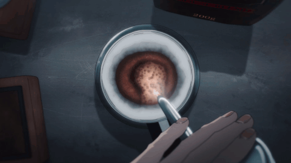
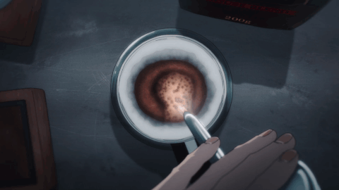
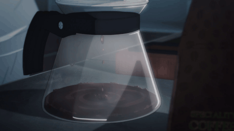
Bocchi The ROCK! episode 1 by CloverWorks
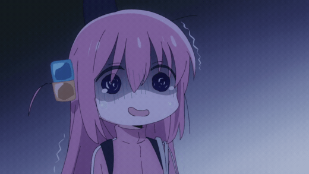
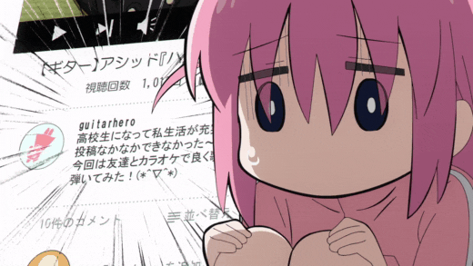
Bocchi The ROCK! episode 4 by CloverWorks
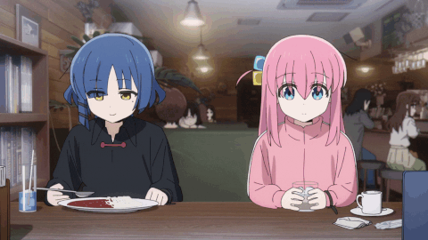
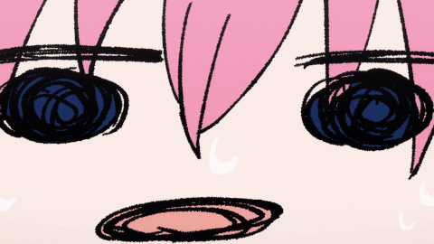
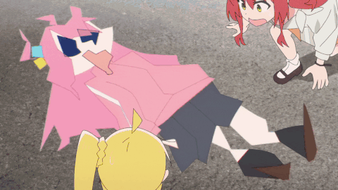


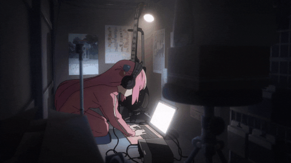
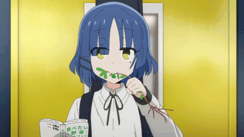
Bocchi The ROCK! episode 5 by CloverWorks
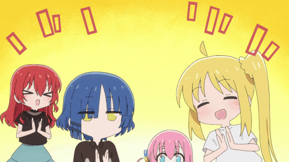
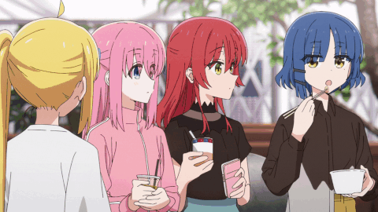

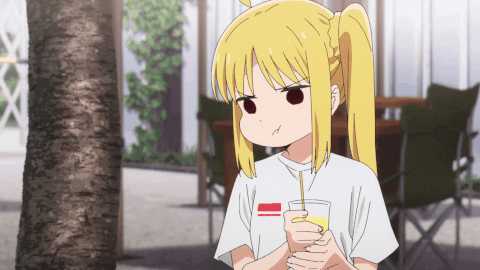
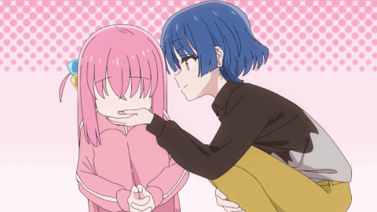
Bocchi The ROCK! episode 6 by CloverWorks
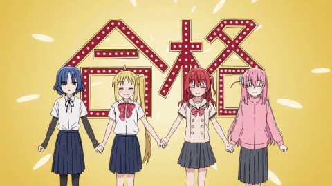
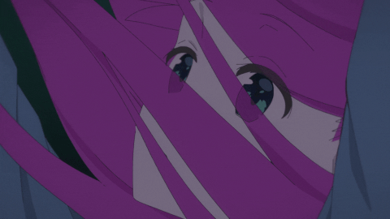
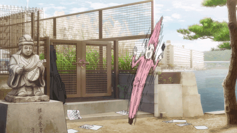
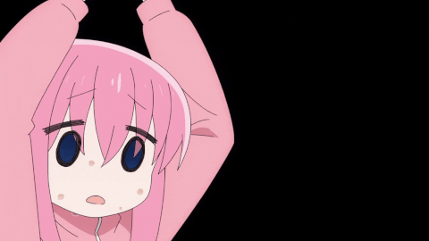
Bocchi The ROCK! episode 7 by CloverWorks
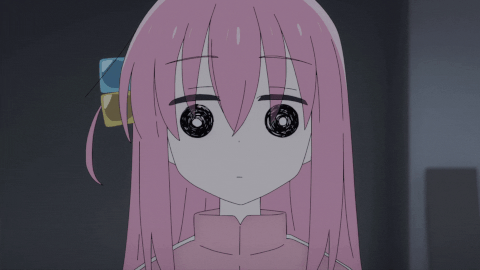
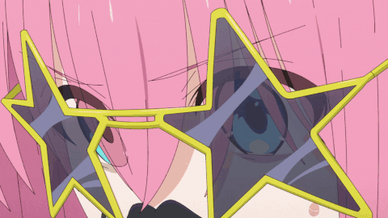
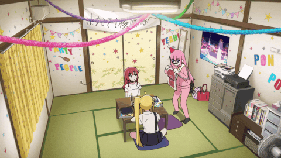
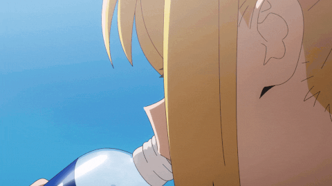
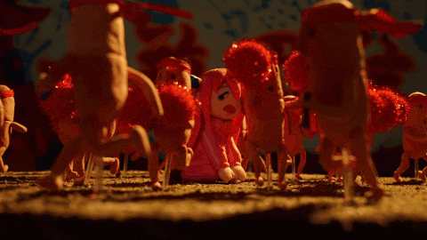
Bocchi The ROCK! episode 8 by CloverWorks
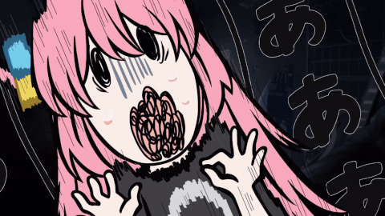
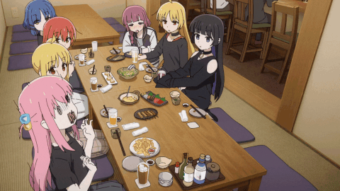
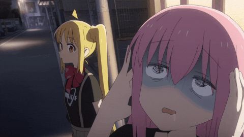
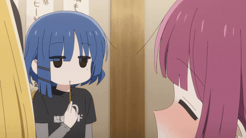
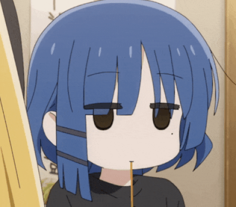
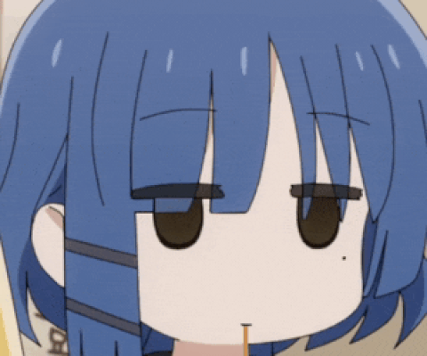
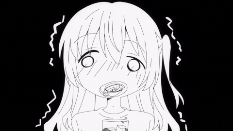
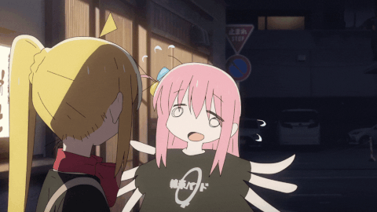
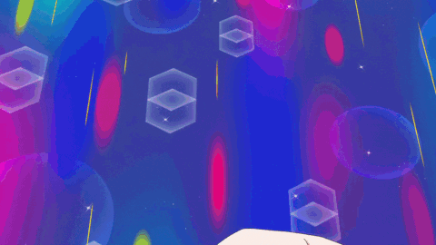
Bocchi The ROCK! episode 9 by CloverWorks
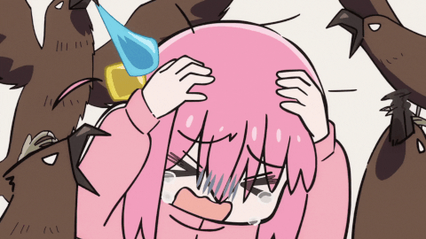
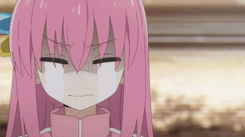
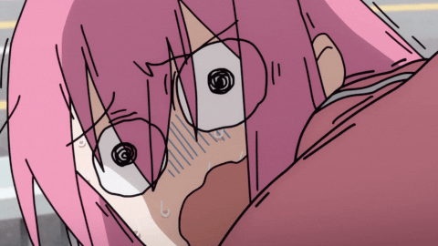
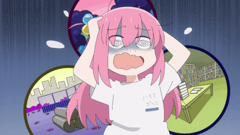
Bocchi The ROCK! episode 10 by CloverWorks
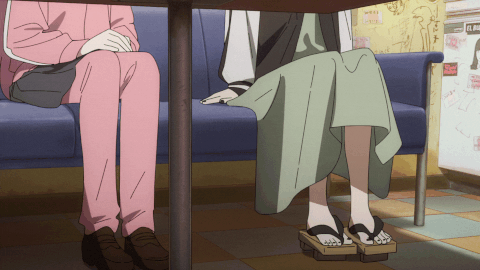
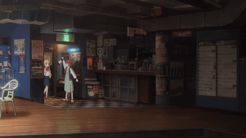
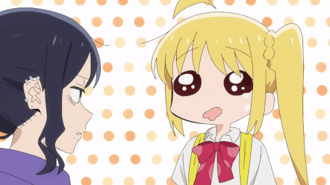
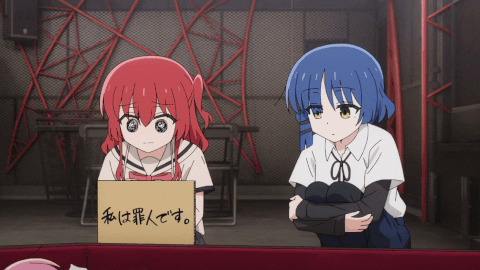
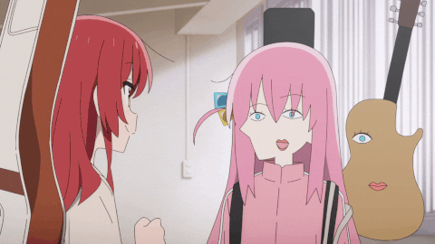
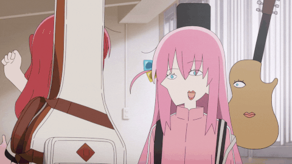

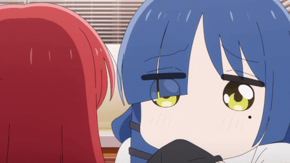
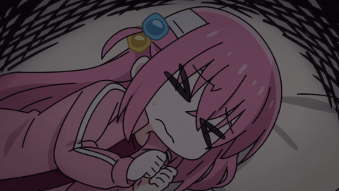
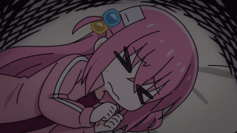
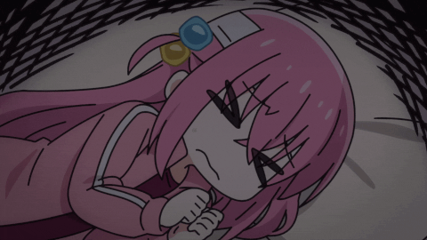
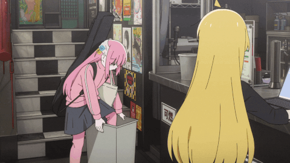
Bocchi The ROCK! episode 11 by CloverWorks
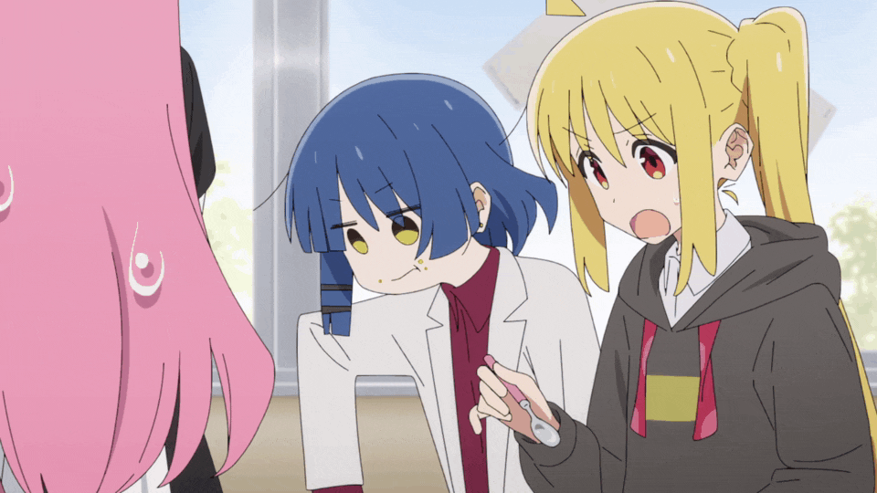
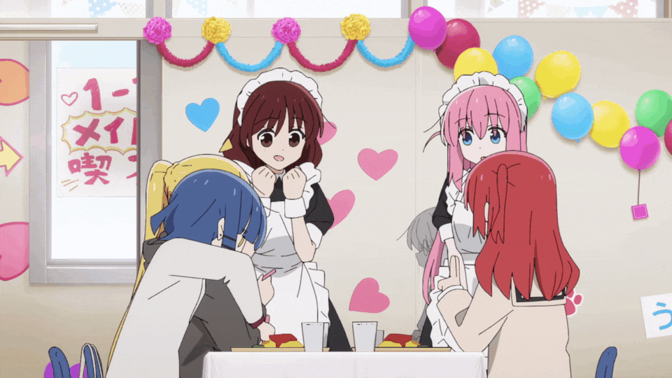
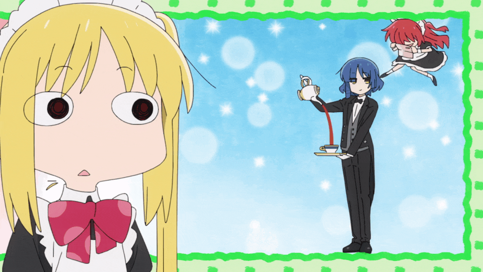